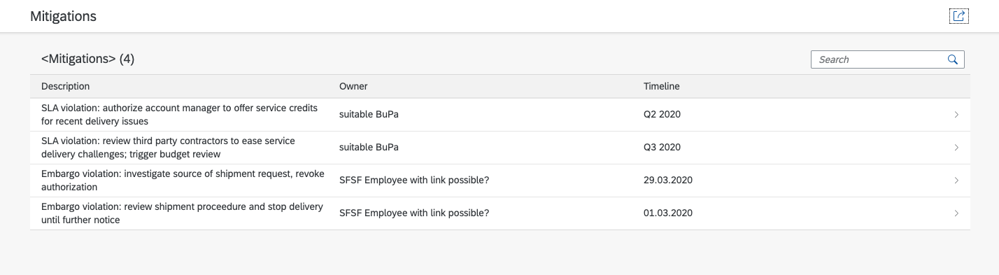
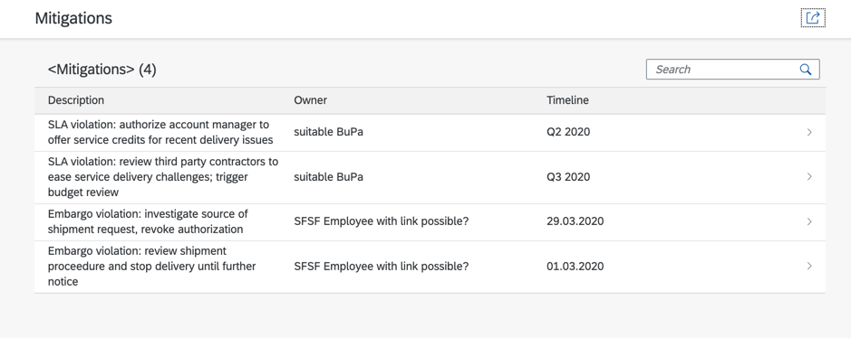
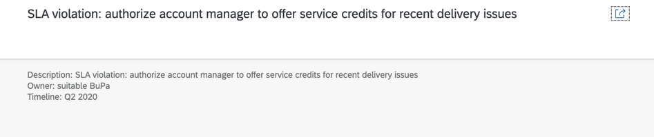

Create a Freestyle UI5 Application
Prerequisites
- Get Started
- Create a CAP-Based Service
- Create an SAP Fiori Elements-Based Applicaton
- Add Business Logic to Your Application
The results of the previous module Add Business Logic to Your Application can be found here.
Additional Documentation
- @TODO (Iwona)
In this section, you create a Freestyle UI5 app on top of your CAP service.
SAP Fiori Elements Application vs. Freestyle UI5 Application
What is the difference to an SAP Fiori elements (FE) based application that you've already built in the Create an SAP Fiori Elements-Based Application section? As mentioned, both the freestyle app and the FE app are based on SAPUI5.
An FE app can be thought of like a giant player built with SAPUI5 where most of the code resides outside your own development project in central components. Much of its logic comes out of the box and is controlled by metadata from your OData service.
A freestyle UI5 application, on the other hand, lives mainly in your own project - all the views and controllers are in it. It still comes with all the features of SAPUI5 (super rich SAP Fiori compliant set of UI controls, data binding, model view controller, and so on), but if you want to, for example, program a screen where a user can edit data, you’ve got to program it yourself. In FE, this functionality is available out of the box. With the greater amount of work for standard use cases, however, also comes a greater freedom. In a freestyle app, you can do what you need to do using SAPUI5 or even using third party / open-source components. While there are also options in FE to adjust your application outside of the possibilities given you via metadata (annotations) using the so-called "Flexible Programming Model", in a freestyle UI5 app, the sky is the limit with respect to freedom and optimization.
Fortunately, you've also got a choice of several templates that get your application kick started for freestyle UI5. They copy the initial code into your project and any change necessary for the app can be done manually by you in the code.
Creating the Application
In the next steps, you build an application using the mitigations part of our CAP-based service.
-
Make sure that you’ve installed the SAPUI5 templates as described in section Installation.
-
Open a terminal in VS Code via Terminal → New Terminal.
-
Navigate to your project folder.
-
Navigate to the
appfolder:cd app -
Create a new
mitigationsfolder for the new app:mkdir mitigations -
Navigate to the
mitigationsfolder:cd mitigations -
Create a freestyle UI5 application:
A creation wizard starts.yo @sapui5/sapui5-templates -
Follow the creation wizard and use the following values:
- "Provide the module name" mitigations - "Provide the module namespace" ns - "Select a template" SAP Fiori Worklist Application OData V4 - "Title" Mitigations - "Description" Mitigations - "Choose if your app should run in SAP Fiori Launchpad or standalone" Standalone App (optimized for individual deployment) - "Select batch mode corresponding to selected OData Service" Auto: Requests are grouped in one batch request - "Service Base URI" http://localhost:4004/service/risk - "Datasource URL" /service/risk - "Object Collection" Mitigations - "Object Collection ID" ID - "Object Title" ID - "Object Numeric Attribute": <leave empty> - "Object Unit of Measure": <leave empty> -
Open the newly created file
manifest.jsonin yourcpapp/app/mitigations/webappfolder. -
Add a
/to the beginning of the value of theuriparameter:{ ... "sap.app": { ... "dataSources": { "mainService": { "uri": "/service/risk/", "type": "OData", "settings": { "odataVersion": "4.0", "localUri": "localService/metadata.xml" } } } },
Summary
What happened here? (You can skip this and carry on with Starting the Application if you aren't keen to know.)
First, you created a new application from the work list template with a detail page based on a V4 OData service (the CAP service is V4). The result is a similar application layout like the one you've already chosen in the Create an SAP Fiori Elements-Based Application section. There are other templates available (a Worklist Application and a Master Detail one, both for V2 services).
You chose to be able to run this app standalone, so without necessarily having to have an SAP Fiori launchpad to host it. On a technical level, you chose to send all the OData requests from the app using batches. A batch is a kind of a wrapper for requests. You can wrap multiple requests into one with a batch. Even when there’s only one request, a batch is better for security reasons, as not all the data of the request is exposed in the URL. So, in essence, for performance and security reasons, it's always a good idea to choose batch.
Then there’s the section about the service base URI and the data source URL. It prepares your project for the optional use of more SAPUI5 Tooling for development. It ensures that the requests for the OData service from the application (all for our risk service, so starting with /risk) are mapped to the backend service, which is our CAP service, running under http://localhost:4004/service/risk.
Why is a mapping needed?
You might ask yourself why you've got to specify this here, when in the Create an SAP Fiori Elements-Based Application section you didn't. The answer is that the SAP Fiori Elements case was streamlined to a CAP service already (you even told the app generator to get the service from a CAP project). Freestyle SAPUI5 templates don’t have the special treatment of CAP yet and instead make no assumption where the OData service comes from, it could be a remote one based on another framework. To make the connection, the above mapping is needed. SAPUI5 has a so-called middleware that proxies to the remote service. You can see this by opening the ui5.yaml file under cpapp/app/mitigations:
...
server:
customMiddleware:
- name: ui5-middleware-simpleproxy
mountPath: /risk
afterMiddleware: compression
configuration:
baseUri: http://localhost:4004/service/risk
The change in the manifest.yaml is to make sure that the data requests are used with an absolute URL at /risk. The original entry for the URI was risk. This would have triggered SAPUI5 to issue any data request relative to the path of the application itself, but we want the requests to be absolute to risk.
Starting the Application
-
Make sure
cds watchis still running in the project root folder:cds watch -
Open the URL http://localhost:4004/.
You now see two new HTML pages.

-
Choose the
/mitigations/webapp/index.htmlentry.
As a result, you can see a list but you can only see the IDs of the mitigations both in the list view and on the detail page. This is because the freestyle template only got the information from you that the
Object Collection IDis theIDproperty of themitigationsservice. You now need to add additional SAPUI5 controls that are bound to additional properties of themitigationsservice. -
Open the view of the work list
cpapp/app/mitigations/webapp/view/Worklist.view.xmland add the following code, removing theIDcolumn and instead addingDescription,OwnerandTimelinecolumns:<columns> <Column id="DescriptionColumn"> <Text text="Description" id="DescriptionColumnTitle"/> </Column> <Column id="OwnerColumn"> <Text text="Owner" id="OwnerColumnTitle"/> </Column> <Column id="TimelineColumn"> <Text text="Timeline" id="TimelineColumnTitle"/> </Column> </columns> <items> <ColumnListItem type="Navigation" press=".onPress"> <cells> <ObjectIdentifier text="{description}" /> <Text text="{owner}" /> <Text text="{timeline}" /> </cells> </ColumnListItem> </items> -
Open the view of the object
cpapp/app/mitigations/webapp/view/Object.view.xmland also replaceIDand addDescription,Owner, andTimelineusing SAPUI5 controls likeObjectStatus(you can copy the whole code and replace the existing code in the file):<mvc:View controllerName="ns.mitigations.controller.Object" xmlns="sap.m" xmlns:l="sap.ui.layout" xmlns:mvc="sap.ui.core.mvc" xmlns:semantic="sap.f.semantic"> <semantic:SemanticPage id="page" headerPinnable="false" toggleHeaderOnTitleClick="false" busy="{objectView>/busy}" busyIndicatorDelay="{objectView>/delay}"> <semantic:titleHeading> <Title text="{description}" /> </semantic:titleHeading> <semantic:headerContent> <ObjectNumber /> </semantic:headerContent> <semantic:sendEmailAction> <semantic:SendEmailAction id="shareEmail" press=".onShareEmailPress"/> </semantic:sendEmailAction> <semantic:content> <l:VerticalLayout> <ObjectStatus title="Description" text="{description}"/> <ObjectStatus title="Owner" text="{owner}"/> <ObjectStatus title="Timeline" text="{timeline}"/> </l:VerticalLayout> </semantic:content> </semantic:SemanticPage> </mvc:View> -
Refresh the
mitigationsapplication in your browser.You can now see the new content in the work list, as well as in the detail object page.


SAPUI5 Serve
While cds watch comes in handy for serving even the SAPUI5 based apps directly in your CAP projects, there’s also an additional alternative, again from the SAPUI5 tools. They also provide a development server that can be used in any pure SAPUI5 project. So, you can use the SAPUI5 development server when there’s no CAP service around and/or the service is provided by a different technology. Here are some advantages of the SAPUI5 development server compared to cds watch, depending on how deep you want to be involved in SAPUI5 freestyle programming.
- You can run multiple servers at a time (
cds watchcan only run once). - A live reload (that is, automatic browser refresh on saving) of all the UI changes.
- Loading local SAPUI5 resources from dependencies.
- Serve middleware.
- Proxy for backend service
- Cache behavior for SAPUI5 resources
- Theme Build on-the-fly for library development
- Transpiling middleware
If these are of interest to you, you can go on using cds watch and skip the rest of the section.
You now add the capability of live reloading to the configuration of the SAPUI5 tools. After enabling it, every time you save a file in your mitigations app, the browser window will automatically reload the new sources and show them.
-
Open the
package.jsonfile in yourcpapp/app/mitigationsfolder. -
Add the following lines to add the live reload module:
{ ... "devDependencies": { "@ui5/cli": "^1.14.0", "ui5-middleware-simpleproxy": "^0.2.1", "ui5-middleware-livereload": "^0.1.10" }, "ui5": { "dependencies": [ "ui5-middleware-simpleproxy", "ui5-middleware-livereload" ] } } -
Open the
ui5.yamlfile in yourcpapp/app/mitigationsfolder. -
Add the following lines to configure SAPUI5 tools to use the live reload module:
... server: customMiddleware: - name: ui5-middleware-simpleproxy mountPath: /service/risk afterMiddleware: compression configuration: baseUri: http://localhost:4004/service/risk - name: ui5-middleware-livereload afterMiddleware: compression configuration: debug: true ext: "xml,json,properties" port: 35729 path: "webapp"Additional documentation
In a projects
ui5.yamlfile, you can define additional server middleware modules that will be executed when the request is received by the server. This configuration exclusively affects the server started in this project. See UI5 Tooling documentation for more details. -
From your
cpappfolder, navigate to yourmitigationsfolder:cd app/mitigations/ -
Check if a (hidden) file called
.npmrcexists:ls -aGet-ChildItem -Hiddendir -
Delete the file
.npmrcif it exists:rm .npmrcdel .npmrc -
Install the npm packages:
npm install -
Start the application. Make sure that
cds watchis running in another terminal:ui5 serve -
Open the new URL http://localhost:8080/index.html.
You now see the mitigations.
The result of these steps can be found here.